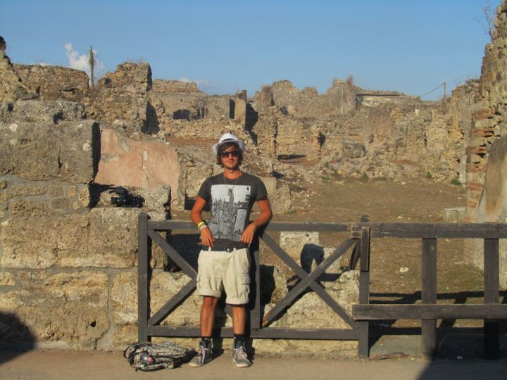
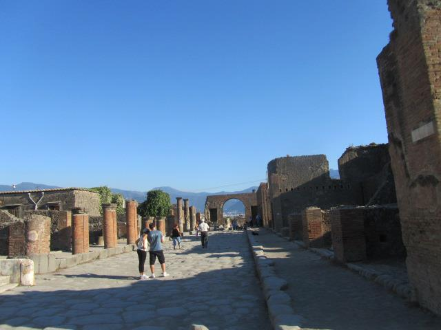
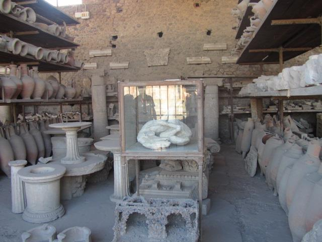

Pompei Voyage: A 4-Day Ancient Roman Adventure

Introduction
Pompei, the ancient Roman city preserved by the catastrophic eruption of Mount Vesuvius in AD 79, offers a remarkable glimpse into life during the Roman Empire. Walking through its well-preserved streets, you can explore the remnants of villas, temples, baths, and bustling marketplaces, providing invaluable insights into ancient Roman culture and daily life. As Carl, a 38-year-old traveler from Australia, I embarked on a 4-day voyage to uncover the historical treasures of Pompei.
A Brief History: Founded in the 7th or 6th century BC by the Osci people, Pompei became a thriving Roman city by the 1st century BC. Its strategic location near the Bay of Naples made it a significant hub for trade and commerce. The city's sudden destruction by Mount Vesuvius preserved it in a state that allows modern visitors to witness the grandeur and intricacies of Roman urban planning and architecture.
Day 1: Arrival and Initial Exploration
Upon arriving at Naples International Airport, I took a train to Pompei, followed by a short bus ride to my accommodation near the archaeological site. The first day was dedicated to an initial exploration of Pompei's vast ruins.
After settling into my hotel, I began my visit at The Forum, the central public space surrounded by important government buildings. Strolling through the Forum provided a sense of the city's bustling political and social life. In the afternoon, I explored the nearby Temple of Apollo, admiring its well-preserved columns and intricate architectural details. The day concluded with a leisurely walk through the streets, taking in the sights and sounds of Pompei at dusk.
Day 2: Deep Dive into History and Art
The second day was all about immersing myself in Pompei's rich history and artistic heritage.
I started the day at the Villa of the Mysteries, renowned for its stunning frescoes depicting the initiation rites of the Dionysian Mysteries. The vibrant colors and intricate details of the murals offer a fascinating insight into ancient Roman religious practices. In the afternoon, I visited the House of the Faun, one of Pompei's largest and most luxurious residences, featuring elaborate mosaics and grandiose architecture. The evening was spent at the ancient amphitheater, reflecting on the city's architectural prowess and its role in Roman entertainment.
Day 3: Exploring Daily Life and Social Structures
On the third day, I delved deeper into the daily lives and social structures of Pompei's inhabitants.

I began at the Stabian Baths, one of the oldest and most well-preserved bath complexes in Pompei. Touring the baths provided a glimpse into the hygienic and social practices of ancient Romans. The afternoon was dedicated to the Lupanar (ancient brothel), famous for its erotic frescoes and inscriptions, illustrating the complexities of Roman social norms and relationships. Later, I explored the Garden of the Fugitives, a poignant area where plaster casts of victims frozen by the eruption capture a tragic moment in history.
Day 4: Markets, Shopping, and Farewell
On my final day, I enjoyed a mix of local markets, shopping, and leisurely exploration.
I visited the Pompei Central Market in the morning, exploring vibrant stalls selling local produce, souvenirs, and traditional crafts. The afternoon was dedicated to shopping for handmade items and mementos to remember my journey. I also took some time to revisit my favorite spots within the archaeological site, capturing final photographs and soaking in the serene atmosphere. The trip concluded with a farewell dinner at a nearby restaurant, savoring authentic Italian cuisine before preparing for departure.
Highlights
- The Forum: The heart of Pompei's political and social life.
- Villa of the Mysteries: Renowned for its stunning frescoes.
- Amphitheater: Ancient venue for gladiatorial games and public spectacles.
- Stabian Baths: Insight into Roman bathing and social practices.
- House of the Faun: Luxurious residence with elaborate mosaics.
- Lupanar: Ancient brothel with vivid frescoes.
- Temple of Apollo: Architectural marvel with rich historical significance.
- Garden of the Fugitives: Emotional site capturing a tragic moment.
- Pompei Central Market: Vibrant market offering local goods and souvenirs.
- Pompation Museum: Exhibits showcasing artifacts and history of Pompei.
Practical Information
Transportation
Pompei is easily accessible by train from Naples, with regular services connecting the two cities. Once in Pompei, public transportation includes buses and taxis. The archaeological site is expansive, so renting a bike or scooter can provide greater flexibility for exploration.
Accommodation
Pompei offers a variety of accommodations, from budget-friendly hostels to luxury hotels. I stayed at a mid-range hotel near the archaeological site, which provided comfortable amenities and easy access to key attractions.
Budgeting
Pompei is relatively affordable compared to other Italian cities. A comfortable daily budget ranges from €30 to €70, covering accommodation, meals, transportation, and activities.
Tips and Recommendations
Do’s and Don’ts
- Do: Book accommodations and tickets to major attractions in advance, especially during peak seasons.
- Don’t: Litter or disturb archaeological sites; help preserve Pompei's historical integrity.
- Do: Wear comfortable footwear for extensive walking on uneven surfaces.
- Don’t: Engage in unsafe activities without proper guidance and equipment.
- Do: Carry a refillable water bottle; there are public drinking fountains throughout the site.
- Don’t: Underestimate the size of the archaeological area; plan your visit accordingly.
- Do: Respect local customs and traditions; observe proper etiquette when interacting with locals.
- Don’t: Jump queues; always wait your turn at popular attractions.
- Do: Use sunscreen and wear a hat, especially during summer months.
- Don’t: Forget to validate your public transport tickets to avoid fines.
Packing List
- Comfortable walking shoes
- Sun protection (sunscreen, hat, sunglasses)
- Lightweight clothing suitable for warm climates
- Camera or smartphone for photos
- Guidebook or map of Pompei
- Reusable water bottle
- Personal medications
- Travel adapter (Type C socket)
- Light jacket for cooler evenings
- Basic Italian phrases
Local Etiquette
Respect the local community and their cultural practices. Always greet with a friendly smile and a polite gesture. Dress modestly when visiting religious and historical sites. When interacting with locals, use polite language and be mindful of cultural norms.
Cultural Immersion
Interacting with local residents provided a deeper understanding of Pompei's cultural heritage and daily life. I participated in a traditional Italian cooking class, learning to prepare authentic dishes and experiencing the rich flavors of Pompeiese cuisine firsthand.
Visiting the Pompation Museum and attending local events offered insights into the city's history and the resilience of its people, fostering a greater appreciation for Pompei's enduring legacy.
Food and Cuisine
Pompei's culinary scene is a delightful blend of traditional Italian flavors and local specialties, offering a variety of dining options to satisfy every palate.
- Pizza Margherita: Originating from Naples, Pizza Margherita is a beloved Italian staple often enjoyed in Pompei. Its simple yet flavorful combination of tomatoes, mozzarella, and basil represents the colors of the Italian flag.
- Pasta e Fagioli: Hearty pasta and bean soup, a comforting dish perfect for any season.
- Gnocchi alla Sorrentina: Soft potato dumplings served with a rich tomato sauce and melted mozzarella.
- Seafood Risotto: Creamy risotto infused with fresh seafood, highlighting Pompei's proximity to the coast.
- Local Wines: A selection of Italian wines, including Aglianico and Falanghina, available at local enotecas and restaurants.
- Tiramisu: Beloved Italian dessert made with layers of coffee-soaked ladyfingers and mascarpone cream.
- Gelato: Creamy Italian ice cream available in a variety of flavors at numerous gelaterias.
I highly recommend dining at a traditional trattoria in Pompei, where you can savor authentic Italian dishes while enjoying the warm and inviting ambiance of local eateries.
Adventure and Activities
Pompei offers a variety of activities for adventure enthusiasts and those seeking unique experiences:
- Guided Archaeological Tours: Explore the vast ruins with expert guides who provide in-depth historical insights.
- Hiking: Trek through the surrounding countryside and Mount Vesuvius for stunning views and outdoor adventure.
- Photography Tours: Capture the beauty of Pompei's ancient architecture and vibrant streets with guided photography sessions.
- Bike Rentals: Navigate the extensive archaeological site and nearby areas with ease using rented bicycles.
- Wine Tasting: Visit local wineries to sample exquisite Italian wines and learn about the region's viticulture.
- Cooking Classes: Learn to prepare traditional Italian dishes with local chefs in hands-on workshops.
- Local Markets: Explore vibrant markets offering fresh produce, artisanal goods, and traditional crafts.
- Historical Walking Tours: Gain deeper insights into Pompei's history and culture with specialized walking tours.
- Volcano Excursions: Take a guided excursion to Mount Vesuvius, learning about its geological significance and impact on the region.
- Relaxation: Enjoy leisurely afternoons at nearby spas or unwind in scenic parks, absorbing the serene atmosphere.
One of the most thrilling activities was hiking up Mount Vesuvius, offering breathtaking aerial views of the Bay of Naples and the expansive Pompei archaeological site.
Personal Stories
Meeting Maria, a local historian, was a highlight of my trip. She shared fascinating stories about Pompei's daily life and the city's resilience in the face of disaster. Her passion for history brought the ancient ruins to life, making my exploration even more meaningful.
Another unforgettable moment was attending a traditional Italian cooking class, where I learned to prepare authentic dishes and enjoyed the process of creating and tasting my own meals. This hands-on experience deepened my appreciation for Italian cuisine and culture.
Conclusion
Pompei is a captivating destination that offers a perfect blend of history, adventure, and cultural immersion. As Carl, I found my 4-day journey to be an enriching and exhilarating experience, uncovering the dynamic history and stunning archaeological treasures of one of Italy's most renowned ancient cities.
If you're planning a trip to Italy, Pompei should definitely be on your list. Whether you're seeking historical insights, cultural experiences, or simply a unique travel adventure, Pompei has something for everyone.
Until next time, happy travels!
Visitor Testimonials
"Pompei is an incredible window into ancient Roman life. The well-preserved ruins are mesmerizing, and the guided tours provided deep insights into the city's history. Exploring the Forum and the Villa of the Mysteries was truly unforgettable."
"The experience of walking through Pompei's streets is like stepping back in time. The meticulous preservation of the buildings and frescoes offers a unique and immersive historical experience. Highly recommend visiting during the spring for pleasant weather and fewer crowds."
Follow My Adventures
Stay connected and follow my journey through the links below: